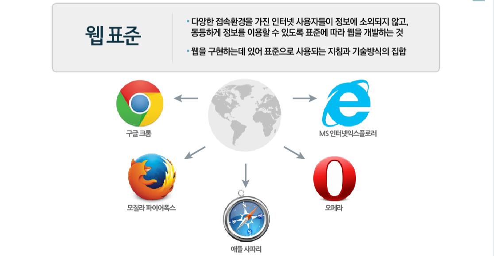
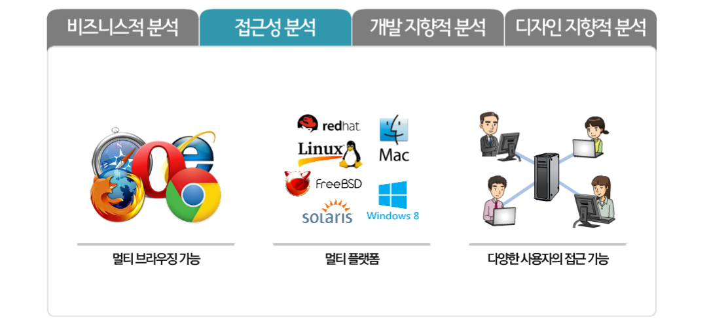

웹 표준
*웹 표준의 정의
월드 와이드 웹의 측면을 서술하고 정의하는 공식 표준이나 다른 기술 규격을 가리키는 일반적인 용어
보통 인터넷을 이용할 때 같은 웹페이지라면 어느 브라우저를 사용하는지 여부에 상관없이 그 웹페이지가 똑같이 보이고 정상적으로 작동해야 함을 의미한다.
Acid 테스트를 통해서 웹 브라우저가 웹 표준을 준수하는지 테스트할 수 있다. 한국에서는 정부부터가 웹 표준을 무시한다.
웹 서비스를 주력으로 삼는 기업들은 거의 대부분 웹 표준을 따라가거나 따라가려고 노력하고 있다.
17년 문재인 정부가 들어서며 정부 산하의 사이트에서 액티브 X, 공인인증서, 플러그인 사용을 없앤다고 발표했는데 실현될 가능성이 없진 않다.
이미 광화문 1번가라는 실기가 만들어지긴 했는데, 아직까진 갈 길이 멀다.
*웹 표준의 중요성
산업표준이 왜 존재하는지, 도량형이 왜 존재하는지 생각해 보면 이유가 명확해진다.
산업현장에서 부품들의 표준화가 돼 있지 않으면 업체마다 서로 호환이 되지 않고, 같은 업체에서 생산하는 부품도 품질보장이 되질 않을 것이다.
웹 환경은 본질적으로 '통신'이기 때문에 더욱 더 표준화가 중요해진다. 비표준 '부품'이야 자기네 제품에만 독점적으로 사용할 거라면 크게 상관없지만
웹은 누가 어떤 장치를 어떤 방식으로 사용할지를 제공자가 통제할 수 없기 때문이다. 인터넷 그 자체가 크로스 플랫폼인 이유.2016년 현재 인터넷 사용 인구는
30억명을 훌쩍 넘긴다. 사실상 전인류의 절반이 인터넷을 사용하고 있고 인터넷 트래픽의 거의 전부를 차지하는 게 웹 트래픽이다.
사용하는 사람이 많아지면 표준화는 반드시 해결해야 할 과제가 된다. 그것이 일개 개인의 프로젝트에서 시작되었든(월드 와이드 웹), 국제 연합 수준의 극대규모
프로젝트(미터법)였던 말이다. 웹 표준이 없던 1990년대 말 ~ 2000년대 초반에는 웹 사이트 개발자는 사실상 두 개의 사이트를 만들어야 했다.
인터넷 익스플로러용과 넷스케이프용의 두 개. 실질적으로는 각종 핵과 브라우저 판별 코드를 삽입해야 해서 3배의 노동이 들었다.
웹 접근성
*웹 접근성의 정의
웹접근성은 장애 여부에 상관없이 누구나 원활하게 웹페이지를 이용할 수 있어야 한다는 것을 의미한다.
*웹 접근성의 필요성
-
웹접근성은 장애 여부에 상관없이 누구나 원활하게 웹페이지를 이용할 수 있어야 한다는 것을 의미한다.
예를 들어 시각장애인의 경우 화면을 눈으로 볼 수 없기 때문에 그렇지 않은 사람과 같은 방식으로는 웹페이지를 이용할 수 없다.
그래서 '스크린 리더'라는 별도의 소프트웨어를 컴퓨터에 설치해서 인터넷을 이용한다. 스크린 리더는 모니터에 비춰지는 내용을 인식해서
음성, 점자로 출력해주는 역할을 한다. 예를 들어 화면에 '메뉴'라는 텍스트가 있으면 이를 인식해서 '메뉴'라는 음성이 나오는 방식이다.
시각장애인은 이를 이용해 눈으로 보는 대신 소리로 들으면서 웹페이지에 담긴 정보를 이해할 수 있다. 하지만 스크린 리더는 소프트웨어에 불과하므로
스스로 웹페이지의 내용을 분석해서 이건 무슨 내용이고 저건 무슨 내용이다라는 걸 이해할 수 없다. 특히 이미지의 경우가 그렇다. '메뉴'라고 텍스트로
집어 넣지 않고 메뉴라고 그려진 이미지를 사용하면 비 시각 장애인의 눈에는 똑같이 메뉴라고 보이지만 소프트웨어 입장에서는 그저 이미지일 뿐이다.
그 이미지 안에 그려진 내용을 인식하는 것은 불가능하다. 그래서 되도록이면 이미지를 사용하지 말고 소스 코드에 내용을 그대로 담는 것이 권장되며,
부득이하게 이미지를 사용할 경우 반드시 이 이미지가 어떤 내용인지 설명을 추가해야 한다.
-  